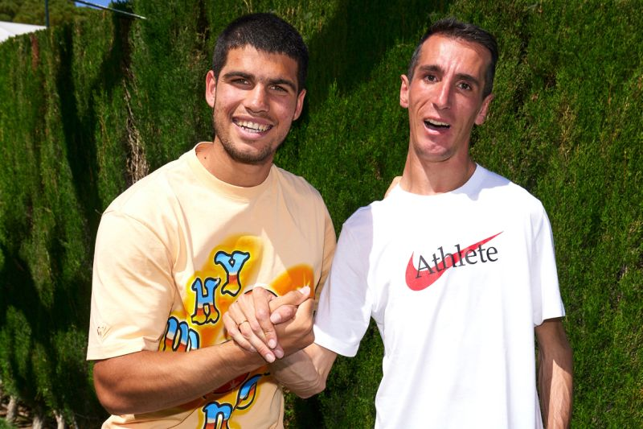
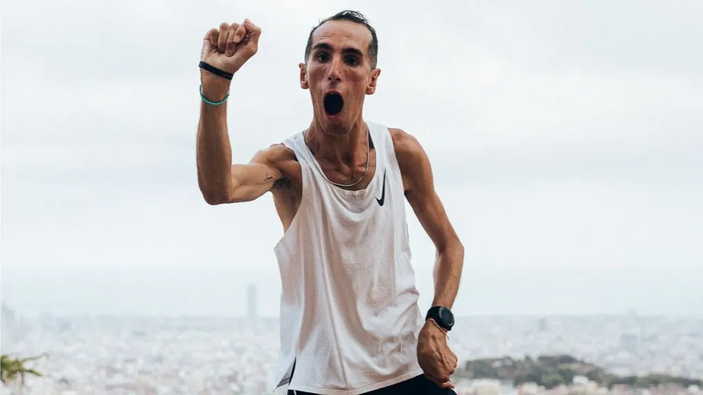

Galería de Álex Roca



¿Quién es Álex Roca?
Álex Roca es un atleta español que ha roto barreras en el mundo del deporte. Nació con parálisis cerebral debido a una encefalitis viral que sufrió a los seis meses de vida. A pesar de que los médicos le dieron solo un 5% de posibilidades de sobrevivir, se ha convertido en un referente del deporte adaptado.
Superando Límites
Con un 76% de discapacidad motriz, Álex ha completado maratones y ultradistancias. En 2023, se convirtió en la primera persona con parálisis cerebral en finalizar la Maratón de Barcelona.
"El límite te lo pones tú."
Logros Destacados
- Primera persona con parálisis cerebral en completar la Maratón de Barcelona.
- Ha participado en múltiples carreras internacionales de larga distancia.
- Embajador de diversas causas sociales relacionadas con la inclusión y la superación personal.